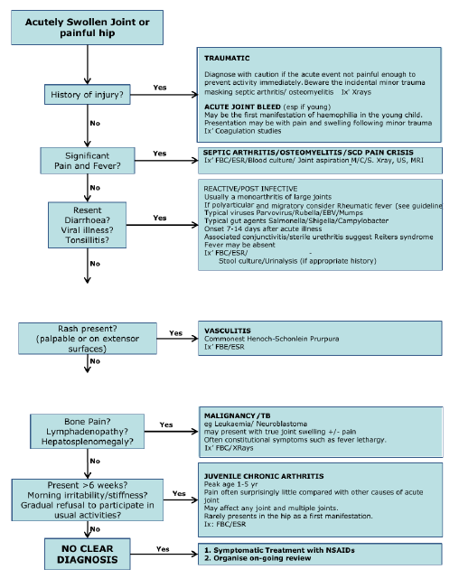

The swollen joint

Important points in history
- Length of history of swelling
- Any trauma or injury. N.b. Beware the incidental minor trauma masking septic arthritis/ osteomyelitis
- Recent history of viral illness e.g. gastroenteritis, sore throat etc
- History of flitting arthritis
- Fever
- Rash
- Maternal infection e.g. syphilis
- Any other joints involved or been involved
- Decreased movement of the joint and pain
- Past history of sickle cell disease, asplenia, or frequent malaria infections
- Previous admissions for same problem
- Family history of sickle cell disease, haemophilia or arthritis
Important points on examination
- Is the child ‘toxic’ ie looks unwell, listless?
- Is the child in pain?
- Fever?
- Is the affected joint
- swollen (if so is there an effusion present)?
- warm?
- red?
- painful?
- Can the joint be moved by patient or observer?
- Any rashes or skin changes (including rheumatic nodules, or purpura)?
- Are any other joints abnormal, and if so what is the distribution of them e.g. symmetrical/ asymmetrical, large joint/ small joint?
- Cardiac murmur?
- Are there enlarged LNs or hepatosplenomegaly (Leukaemia or systemic Juvenile Idiopathic Arthritis)?
Relevant investigations
- Blood culture if febrile, FBC and diff
- X ray of affected area (look for effusion, for bony changes or double periosteum in syphilis)
- Consider ultrasound, usually only useful in hip involvement
- Inform ortho team if septic arthritis or osteomyelitis
- Consider MRI if uncertain diagnosis
- Maternal VDRL in infant
Indications for admission
Unless obvious history of sprain or minor trauma admit for investigation and observation.
Causative Organisms
SEPTIC ARTHRITIS
Peak age 2 yrs, unwell febrile child & reduced Range of movement of joint
- Salmonella Typhimurium
- Staph aureus
- Haemophilus Influenza
- Group A & B Streptococci
- Pneumococcus
- Coliforms (neonates)
- Tuberculosis
N.b. If in shoulder of infant or if child is malnourished and anaemic, usually Salmonellae spp
OSTEOMYELITIS
Any age especially neonates, fever, bone pain, reduced limb movement
- Staph aureus
- Salmonella Typhimurium
- Salmonella spp (sickle cell disease)
- Group B Streptococci (neonate)
- Coliforms (neonate - esp. preterm)
- Neisseria meningitidis
- Tuberculosis
NB Tuberculosis
- Can cause osteomyelitis and septic arthritis
- Signs less marked than other bone infections, history more chronic
- Systemic TB sometimes apparent
- Spinal TB can cause paraplegia and deformity (Pott’s disease)
- Treatment is anti TB medications and surgery. (D/W orthopaedic surgeons)
Treatment of Septic Arthritis and Osteomyelitis
Medical Treatment for both conditions
- Neonates: flucloxacillin & gentamicin IV until fever settles then oral treatment for 4 weeks depending on bacterial susceptibilities
- Older children: Ceftriaxone 50mg/kg IV OD
- Treat until fever is settled then oral ciprofloxacin for further 4 weeks if osteomyelitis, and 3 weeks if septic arthritis and improving.
Surgical Treatment:
- Osteomyelitis – if acute osteomyelitic abscess drainage required. Discuss with the orthopaedic surgeons.
- Septic arthritis –abscess drainage requiered - consult orthopaedic surgeons (see below)
Other treatment:
Post surgery need physiotherapy and early mobilization to prevent stiffness and preserve function when pain free.
Treatment of Congenital Syphilis
- 10 days im/iv benzylpenicillin and treat both parents.
Supportive Care
- Analgesia – paracetamol, non-steroidal anti-inflammatory drugs (if available), and opiates may be required
- Rest the joint – sling for arm, bed rest for lower leg. Sometimes traction is needed for a hip joint
Complications
- Chronic Osteomyelitis - If acute osteomyelitis goes untreated pus escapes the intramedullary space to form a sequestrum (avascular cortical bone) by spreading proximally and distally removing periosteum and making the cortex ischaemic. New bone is formed by the periosteum (involucrum). Management is difficult – consult orthopaedic surgeons.
- Stiff immovable joint – is a late presentation of septic arthritis as articular surface may have been destroyed. There may be a coexistent osteomyelitis in ~15% cases.
NB Orthopaedic surgeons
- To locate an orthopaedic team member, there is a clinical officer in A&E every morning at 11am and afternoon at 3 pm.
- For the orthopaedic on call refer to the on-call rota hung up in the ortho room in A&E or in the surgical annex
- The orthopaedic ward round on the paediatric surgical ward is on Mondays and Fridays.
- The phone number for the CURE receptionist who can relay messages to senior surgeons is 01 875015.
FOLLOW UP
All children admitted with joint or possible bone infection need follow up either in the general clinic or in case of septic arthritis or osteomyelitis in the paeds ortho clinic on Thursday morning at Paeds A&E clinic rooms. Chronic osteomyelitis usually refered to CURE for elective surgery.